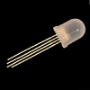

CIRC
12
.:LED Colours:.
.:single RGB LED:.

(ARDX) .:Arduino Experimenter´s Kit:. (ARDX)
What We're Doing
We previously caused a single colour LED to blink. Now we will blink an RGB LED in each of its possible (full brightness) colours. An RGB LED is really 3 LEDs (Red, Green, Blue) in a single package. Each can be turned on (and off) separately. With 3 LEDS, there are 8 possible states:
- Red off, Green off, Blue off (black)
- Red off, Green off, Blue on (blue)
- Red off, Green on, Blue off (green)
- Red off, Green on, Blue on (cyan)
- Red on, Green off, Blue off (red)
- Red on, Green off, Blue on (purple)
- Red on, Green on, Blue off (yellow)
- Red on, Green on, Blue on (white)
Along with controlling the LED, we look at some more programming methods to keep your programs small, organized, and easier to change later.
The Circuit
The Parts
| RGB LED Common Cathode x1 |
Wire | 560 Ohm Resistor Green-Blue-Brown x3 |
Schematic
Code (no need to type everything in just)
Download the Code from (
https://wcrsyyc.github.io/ardx/code/CIRC12-code.txt )
(and then copy the text and paste it into an empty Arduino Sketch)
/*
RGB_Blink
Cycle through colours on an RGB LED.
This example code is in the public domain.
This code is setup to cycle the colours for either a common cathode or a common
anode LED. To switch the code from one to the other, it is only necessary to
change the lines initializing the COLOUR_ON and COLOUR_OFF values. The circuit
difference is whether the common lead is connected to ground (for common
cathode), or the +5 (for common anode) line. This has the effect of inverting
the LED states. A HIGH signal turns on one colour of a common cathode RGB LED,
but a HIGH signal turns off one colour of a common anode RGB LED. Reversing
the COLOUR_xxx values compensate for that.
modified 2016/12/01
by H. Phil Duby
Reference:
http://www.learningaboutelectronics.com/Articles/Common-cathode-RGB-LED-circuit.php
http://www.learningaboutelectronics.com/Articles/Common-anode-RGB-LED-circuit.php
*/
// Instead of specifying (and repeating) some common values in the actual code,
// put them in variables with informative names at the beginning of the file,
// then use the variables in sketch. This can both make the code easier to
// understand, and allow changes involving the named values much simpler. They
// would only need changing in one place.
// Setup the values needed to turn an LED (colour) on and off. To use a common
// anode RGB LED, comment (add "//" to the start of) the next 2, and uncomment
// (remove the "//" from) the following 2 lines.
const unsigned int COLOUR_ON = HIGH; // for common cathode
const unsigned int COLOUR_OFF = LOW;
//const unsigned int COLOUR_ON = LOW; // for common anode
//const unsigned int COLOUR_OFF = HIGH;
// LED pin array colour index values
const unsigned int RED = 0;
const unsigned int GREEN = 1;
const unsigned int BLUE = 2;
// For the initial blink logic, any pins will work. PWM capable pins were
// selected, so that the same wiring can be used when using analogWrite to
// using diming to 'make it better'.
const unsigned int rgbPin[] = { 11 , 10 , 9 }; // pin numbers for Red, Green, and Blue
// A *good* way to get the number of entries actually in an array
const unsigned int rgbPinCount = sizeof ( rgbPin ) / sizeof ( unsigned int );
// The time to show a single colour before changing to the next combination
const unsigned long COLOUR_TIME = 500; // milliseconds (0.5 seconds)
void setup () {
// initialize all of the RGB control pins as outputs.
for ( unsigned int colour = 0; colour < rgbPinCount; colour++ ) {
pinMode ( rgbPin [ colour ] , OUTPUT );
}
// An alternate way to do the same thing
// pinMode ( rgb [ RED ] , OUTPUT );
// pinMode ( rgb [ GREEN ] , OUTPUT );
// pinMode ( rgb [ BLUE ] , OUTPUT );
// turn all of the led pins off (black) to start
digitalWrite ( rgbPin [ RED ] , COLOUR_OFF );
digitalWrite ( rgbPin [ GREEN ] , COLOUR_OFF );
digitalWrite ( rgbPin [ BLUE ] , COLOUR_OFF );
}// ./void setup()
void loop () {
cycleManual ();
// cycleRGBset ();
}// ./void loop()
/**
* Cycle through the RGB colours available when turning each colour either full
* on or full off, in all possible combinations.
*
* This version explictly turns each colour on and off as needed.
*/
void cycleManual () {
// Set RGB LED to Red
digitalWrite( rgbPin [ RED ] , COLOUR_ON );
delay ( COLOUR_TIME );
// Set RGB LED to Green
digitalWrite ( rgbPin [ RED ] , COLOUR_OFF );
digitalWrite ( rgbPin [ GREEN ] , COLOUR_ON );
delay ( COLOUR_TIME );
// Set RGB LED to Blue
digitalWrite ( rgbPin [ GREEN ] , COLOUR_OFF );
digitalWrite ( rgbPin [ BLUE ] , COLOUR_ON );
delay ( COLOUR_TIME );
// Set RGB LED to Yellow ( RED + GREEN )
digitalWrite ( rgbPin [ BLUE ] , COLOUR_OFF );
digitalWrite ( rgbPin [ RED ] , COLOUR_ON );
digitalWrite ( rgbPin [ GREEN ] , COLOUR_ON );
delay ( COLOUR_TIME );
// Set RGB LED to Purple ( RED + BLUE )
digitalWrite ( rgbPin [ GREEN ] , COLOUR_OFF );
digitalWrite ( rgbPin [ BLUE ] , COLOUR_ON );
delay ( COLOUR_TIME );
// Set RGB LED to Cyan ( GREEN + BLUE )
digitalWrite ( rgbPin [ RED ] , COLOUR_OFF );
digitalWrite ( rgbPin [ GREEN ] , COLOUR_ON );
delay ( COLOUR_TIME );
// Set RGB LED to White ( RED + GREEN + BLUE )
digitalWrite ( rgbPin [ RED ] , COLOUR_ON );
delay ( COLOUR_TIME );
// Set RGB LED to Black ( all off )
digitalWrite ( rgbPin [ RED ] , COLOUR_OFF );
digitalWrite ( rgbPin [ GREEN ] , COLOUR_OFF );
digitalWrite ( rgbPin [ BLUE ] , COLOUR_OFF );
delay ( COLOUR_TIME );
}// ./void cycleManual ()
/**
* Use a function to set the RGB colour, and wait.
*/
void cycleRGBset () {
setLedColour ( COLOUR_ON , COLOUR_OFF , COLOUR_OFF ); // Red
setLedColour ( COLOUR_OFF , COLOUR_ON , COLOUR_OFF ); // Green
setLedColour ( COLOUR_OFF , COLOUR_OFF , COLOUR_ON ); // Blue
setLedColour ( COLOUR_ON , COLOUR_ON , COLOUR_OFF ); // Yellow
setLedColour ( COLOUR_ON , COLOUR_OFF , COLOUR_ON ); // Purple
setLedColour ( COLOUR_OFF , COLOUR_ON , COLOUR_ON ); // Cyan
setLedColour ( COLOUR_ON , COLOUR_ON , COLOUR_ON ); // White
setLedColour ( COLOUR_OFF , COLOUR_OFF , COLOUR_OFF ); // Black
}// ./void cycleRGBset ()
/**
* set the RGB LED colour and wait for awhile
*
* @param red the ON/OFF state for the red LED
* @param green the ON/OFF state for the green LED
* @param blue the ON/OFF state for the blue LED
*/
void setLedColour ( const unsigned int red , const unsigned int green , const unsigned int blue ) {
digitalWrite ( rgbPin [ RED ] , red );
digitalWrite ( rgbPin [ GREEN ] , green );
digitalWrite ( rgbPin [ BLUE ] , blue );
delay ( COLOUR_TIME );
}// ./void setLedColour ( const unsigned int red , const unsigned int green , const unsigned int blue )
Not Working? 3 things to try
The LED does not light
It is easy to insert the LED backwards. Check that it is inserted the right way around. The longest lead is common.
The schematic and wiring diagram are for a common cathode RGB LED. If using a common anode device, connect the common lead to +5V instead of GND.
The colour sequence is wrong
The example code is for a common cathode RGB LED. If using a common
anode device, change the COLOUR_ON and
COLOUR_OFF initialization to:
COLOUR_ON = LOW; COLOUR_OFF = HIGH;
Blue and Green light in reverse order
Some RGB LEDs may have the pins that control the Blue and Green LEDs reversed. Either reverse the wires for pins 9 and 10, or change the rgbPin array from { 11 , 10 , 9 } to { 11 , 9 , 10 }. Either change will fix the problem.
Making it Better?
Use colour setting function
In the loop() function there are 2 lines. The last starts
with '//'. This means the line is treated as a comment (not
run). To switch the sketch to use the colour setting function, change the
void loop() code to:
// cycleManual (); cycleRGBset ();
Upload the sketch, and notice that nothing has changed. Each function does the same thing, but uses different approaches (hint: the second one calls another function to set all of the RGB LED pins).
Discussion
The setLedColour() function always sets all 3 leds, whether
they are already correct or not. However, using it also makes the code
easier to read, and simpler to change. To change the order of the
displayed colours, it is only necessary to change the order of the
setLedColour() calls in cycleRGBset(). There is
no need to consider how the previous colour left the pins set, or what the
following colour expects.
Array of colour patterns
Store the colour combinations in an array, then call
setLedColour() with the combinations, one after the other.
This becomes a flexible way to animate fairly long sequences of colours.
First, create an array to
hold the colour combinations. At the top of the file, just after
rgbPinCount is initialized, add:
unsigned const int pattern [][ 3 ] = {
{ COLOUR_ON , COLOUR_OFF , COLOUR_OFF },
{ COLOUR_OFF , COLOUR_OFF , COLOUR_OFF },
};
unsigned const int patternCount = sizeof ( pattern ) / ( sizeof ( pattern [ 0 ]));
That is a 2 dimensional array. Think of it as a table, or an array where each entry in the array is another array. In this case, the main array contains patterns, and each pattern is an array of colour settings. The array will be expanded a bit later, but this is enough to setup the rest of the needed code.
Now, comment out both existing lines in void loop(), and
add:
rgbAnimate ();
Finally, after the end of void loop(), create the
rgbAnimate () function:
void rgbAnimate () {
for ( unsigned int ptn = 0; ptn < patternCount; ptn++ ) {
setLedColour (
pattern [ ptn ][ RED ] ,
pattern [ ptn ][ GREEN ] ,
pattern [ ptn ][ BLUE ]);
}
}
That is enough to be able to load the new program. It won't do much yet.
It just blinks the red LED. To get something more to see, add some more
patterns to the array. Each pattern needs to be an array of the 3 colour
settings { RED_setting, GREEN_setting, BLUE_setting },
Don't forget the comma after each set of colours. To get the same pattern
as was seen initially, the patterns need to be the same as the values
passed to setLedColour () in cycleRGBset ().
IDEA: changing the value of COLOUR_TIME will change the
cycling speed for any of the versions.
IDEA: to get real colour blinking, make every other colour in the pattern black (all colours OFF).